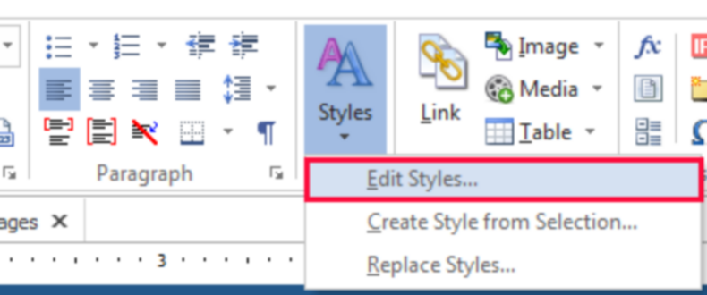

|
<< Click to Display Table of Contents >> Navigation: »No topics above this level« This is Heading1 |
This reference topic is a showcase of the styles contained in this help project template. Once you are familiar with styles, you can simply delete this topic (select "Stylesheet for Style Test" in the TOC, then press DEL).
The predefined styles in this project should help you get started more quickly. You can change, extend and customize these styles here:

Text + paragraph styles in this project template:
This is Normal. This is Normal. This is Normal. This is Normal. This is Normal. This is Normal. This is Normal. This is Normal. This is Normal. This is Normal. This is Normal. This is Normal. This is Normal. This is Normal. This is Normal. This is Normal.
This is Body Text. This is Body Text. This is Body Text. This is Body Text. This is Body Text. This is Body Text. This is Body Text. This is Body Text. This is Body Text. This is Body Text. This is Body Text. This is Body Text. This is Body Text. This is Body Text. This is Body Text. This is Body Text. This is Body Text.
This is Callouts.
This is Code Example.
This is Image Caption.
This is Notes.
This is NotesBox.
This is PopupBox.
This is See Also.
This is Tip Body.
Text-only styles in this project template:
T_Code | T_Emphasis | T_Entry | T_Entry 10pt | T_Menu | T_Menu 10pt